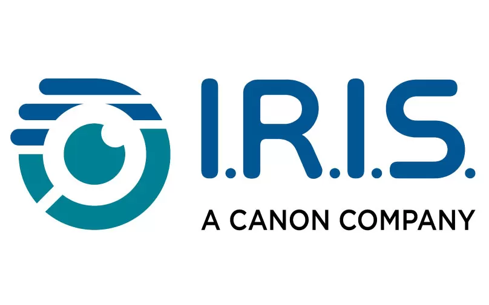

Célestin Matte
Administrateur Système DevOps
")
Bonjour ! Je suis un administrateur système DevOps indépendant avec une passion pour l'optimisation des infrastructures Linux. Je suis déploie et migre de systèmes en utilisant Ansible dans GCP et AWS, garantissant ainsi l'automatisation, la traçabilité et la documentation.
Mon expertise réside dans la garantie de la résilience des systèmes grâce à la mise en place de solutions complètes de surveillance, de redondance et de redéploiement automatique rapide. Je suis également motivé par le défi de moderniser des réseaux complexes qui souffrent d'une gestion insuffisante, les transformant ainsi en systèmes surveillés, sauvegardés et automatisés.
Avec un diplôme d'ingénieur, un doctorat et 10 ans d'expérience dans la maintenance d'infrastructures Linux, j'ai l'habitude de travailler de manière autonome et efficace dans des environnements internationaux. Je travaille à temps plein en tant qu'administrateur système depuis 3 ans.
- migration de services vers le cloud,
- mise en place de systèmes de sauvegarde automatisés,
- mise en place d'un pipeline CI/CD,
- configuration d'un système d'alerte pour vos serveurs,
- installation de nouveaux services (web, mail, visioconférence, etc.),
- mise à jour des systèmes obsolètes,
- maintenance des systèmes,
- mise à jour de vos certificats.
Compétences :
- Systèmes d'exploitation : Debian, Arch Linux, Ubuntu, CentOS
- Outils DevOps : Ansible, Bash, Git, Gitlab, Docker, SSH
- Cloud : Google Cloud Platform, AWS, OVH, Gandi
- Logiciels: Apache, NGINX, MariaDB, PostgreSQL, Postfix, Exim, Dovecot, Fail2ban, PHP-FPM, OpenVPN, Nagios, vSphere
- Programmation : Python/Flask, Django, PHP
- En apprentissage: Kubernetes, Terraform
France

Software in the Public Interest
DevOps Sysadmin

-
Migration des systèmes existants vers des solutions cloud correctement maintenues :
- Migration de systèmes vers Google Cloud Engine et AWS :
- sites web
- listes de diffusion (mailman)
- serveurs mail (postfix/exim)
- Migration de serveurs Git sous gitolite vers Gitlab.
- Configuration de Google Workspace.
- Transfert de zones DNS de Mythic Beasts vers Gandi, communication avec les projets associés.
- Ajout de solutions de monitoring et de backup.
- Écriture de documentations.
- Réécriture d'une application web Flask en Django..
- Écriture d'un script Ansible pour l'installation du logiciel de liste de diffusion pglister, travail avec l'équipe upstream pour l'intégration de patchs.
- Configuration de SPF, DKIM et DMARC.
- Mise en place du test de déploiement pour la pipeline CI de PGLister et PGArchives.
- Challenges clés: Autonomie, travail avec les mainteneurs d'un projet open source
- Technologies: Ansible, Google Cloud Engine, AWS, Gandi, Postfix, Django, Gitlab, Docker, pgBackRest
IRIS (Canon group)
System administrator
-
Maintenance de ~50 serveurs Linux :
- Mise à jour de tous les serveurs
- Implémentation de mesures de sécurité
- Debug de problèmes et intervention d'urgence pour des crashs critiques
- Introduction de l'automatisation avec Ansible
- Mise à jour de la documentation
- Communication avec les équipes
- Challenges clés: Autonomie, corrections d'urgence, sécurité
- Technologies: Debian, Ubuntu, CentOS, Fedora, Ansible, Bash, Apache, OpenVPN, Samba, VMWare vSphere, Jira, Confluence
Démo de système de traçage Wi-Fi
-
Installation d'un prototype de traçage Wi-Fi:
- Développement du logiciel de traçage Wi-Fi
- Configuration d'un système Arch Linux minimal
- Développement de scripts Ansible pour gérer les différents scénarios de déploiement possibles
- Configuration de dhcpd pour déployer et configurer automatiquement le réseau de ~15 machines
- Minimisation du risque de crashs système et de fautes matérielles
- Déploiements :
- Cité des Sciences et de l'Industrie (11 mois)
- salle d'exposition du laboratoire CITI
- salle d'exposition de la CNIL
-
Challenges clés:
- Disponibilité d'un système fonctionnant en autonomie pendant plusieurs mois
- Auto-déploiement et configuration complètement automatisés du réseau de ~15 machines
- Technologies: Arch Linux, dhcpd, Ansible, Python
Gestion d'un jeu vidéo en ligne pendant un an
-
Adaptation et gestion d'un jeu vidéo (Sistexpress) pendant un an (~50 joueurs) :
- Réécriture d'un jeu web en PHP en une version très rapide.
- Amélioration de l'interface avec Ajax.
- Surveillance de la consommation CPU et profilage du code pour l'optimiser.
- Configuration de sauvegardes automatiques.
- Management de la communauté.
-
Challenges clés:
- Disponibilité
- Contrôle de la consommation CPU
- Technologies: Ubuntu, Apache, PHP, PHP-FPM, MariaDB, nmon, Symfony, Ajax
Packaging pour Arch Linux
-
Maintenance de packages pour l'Arch Linux user repository (AUR):
- Résolution des problèmes d'une ancienne application pour la compatibilité avec un système moderne.
- Mise en place de Gitlab CI
- Communication avec les mainteneurs des dépendances et des packagers d'autres distributions.
- Gestion des problèmes rapportés par les utilisateurs.
-
Challenges clés:
- Maintenance d'une application utilisant des technologies méconnues.
- Communication avec différents acteurs.
- Technologies: Arch Linux packaging, Gitlab CI, OCaml
Maintenance de serveurs personnels
-
Maintenance de 4 serveurs personnels depuis 2013 :
- Différents services : email, Web, vidéo-conference, VPN,
- Auto-hébergement,
- Automatisation des sauvegardes et mises à jour,
- Surveillance,
- Attention constante à la sécurité (chroot, segmentation réseau...)
-
Challenges clés:
- Disponibilité
- Automatisation
- Technologies: Arch Linux, Debian, Apache, Postfix, Flask, MariaDB, OpenVPN, Jitsi, Docker
Rédaction d'articles pour des revues techniques grand public
-
Rédaction de 7 articles sur différents sujets:
- Sujets de thèse : fingerprinting, anonymisation d'adresse MAC
- Réseaux de neurone
- Bash
-
Challenges clés:
- Rédaction pour le grand public et les techniciens
Thèse + Postdoc
-
- Sujets: Vie privée, traçage Wi-Fi & Web, fingerprinting, RGPD.
- 6 publications dans des conférences à commité de lecture (dont 1 de premier plan) + 1 publication dans un journal.
- Démo de traçage Wi-Fi installée dans un exposition de la Cité des Sciences et de l'Industrie ainsi que dans la salle d'exposition de la CNIL (cf. plus haut).
- Évaluation de 28 000 sites web à l'aide d'un script python/Selenium fait sur mesure.
- Enseignement (3 ans).
- Travail en équipe.
- Collaboration avec des juristes.
- Impact sur l'industrie : travaux cités par Google, travaux discutés à une session de l'IEEE, travaux ayant abouti à une plainte de NOYB à la CNIL, relayée par la presse.
- Cf. mon ancien CV de recherche pour plus de détails.
-
Sélection de livrables (en anglais) :
- Slides de ma soutenance de thèse sur le traçage Wi-Fi. L'introduction est écrite de manière à être compréhensible par un large public.
- Étude sur les bannières à cookies. L'article de recherche associé a été publié dans une conférence de premier plan.
- Logiciels :
- Extension de navigateur pour vérifier le consentement enregistré par les bannières à cookies.
- Application Web pour la visualisation de données relatives à un framework pour les bannières à cookies de référence dans l'industrie (automatiquement mise à jour).